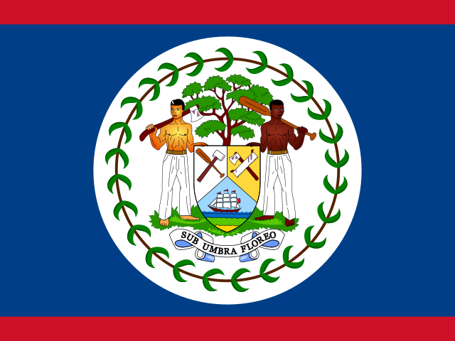

Dick Shrider
Age at death
90
Jan. 21, 2014
NBA seasons
1
1948-49
Games
4
regular season
Per game
0.2
0.2 points
Life
- Born
- Feb. 7, 1923, in Glenford, Ohio
- Died
- Jan. 21, 2014, in Somerville, Ohio
- Age at death
- 90
- Height
- 6'2" (height and lifespan)
Teams
regular-season games| New York Knicks | 1948-49 | 1 | 4 |
Age in context
- No. 100 longest-lived NBA player ever (records).
- He lived longer than 87.7% of the NBA players born in the 1920s who have died (98.9% of that generation has died, so the comparison is essentially complete).
Born the same year (1923)
Also died at age 90
23 players died at 90; the most accomplished are shown.
Also born on February 7

Milt Palaciob. 1978 · age 48Also died on January 21
Similar height
Of 172 NBA players within an inch of his height (6'2") born 1918–1928 whose outcome at 90 is known, 17.4% reached 90. How height and lifespan line up.